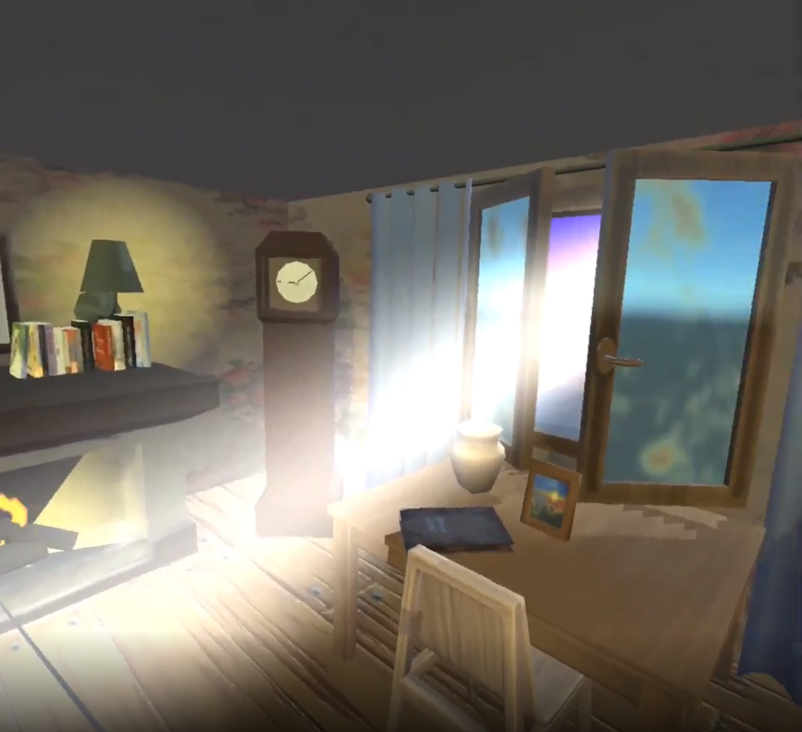
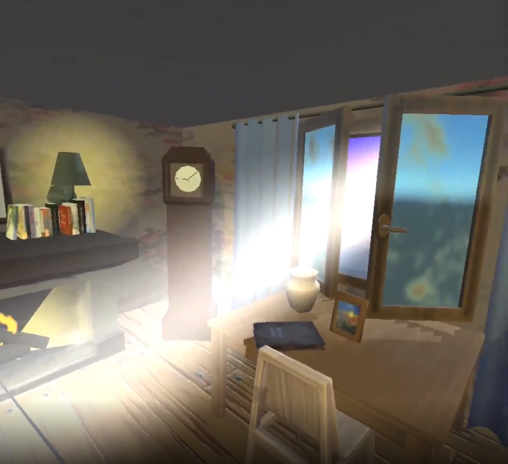
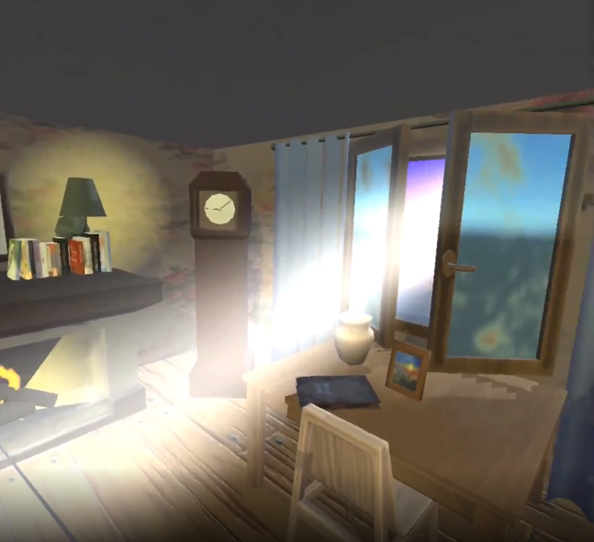

Babushka's Memories
>
Your Babushka aka grandma has several memories that she's straining to remember from her past. There are numerous momentos from her past that are damaged that if they were better preserved, would bring her more joy in her home. You must travel back in time to help preserve her memories to make her home a happier place.Oculus GOC#UnityJan 2019Global Game Jam 2019. Theme is "What home means to you". In a team of 7 (5 developers and 2 modelers) besides one person, it was my first time meeting them. My role as the developer was in charge of setting up a vr environment, upload the build on oculus dashboard, generate keystores and make raycast select objects and what happens to them when selected. One of the first items to interact was to pick up a watering can. To make the watering can follow the hand, I decided to child gameobjects to the hand. However, I couldn't just child it to the hand directly, because the watering can and the hand would clip too much. I added another empty gameobject to the hand that was slightly in front of the hand. Then child the watering can to the empty gameobjectAnother item to interact with was the cabinet. When the raycast hovers over the cabinet, it would get highlighted. Using a separate material, when the raycast interacts with the cabinet, the material would be enabledSince I was in charge of making the android build. I was in charge of merging as well. As the artists make changes, I would merge them in. Below shows that the grandma's house was still in progress, we still needed a windowAnd also needed a ceiling and missing materials for the fireplace's particle systemWhen we were all done, I merged everything. And the window, fireplace and ceiling were included

All the interactable items were interactable and highlighted properly such as the pianoand the bird cageand grandmaWe enojoyed meeting and working together, most of us continued working together after. It was a great team effort and I made great friends. I was so glad I got to work with a larger group at a gamejam
 Another item to interact with was the cabinet. When the raycast hovers over the cabinet, it would get highlighted. Using a separate material, when the raycast interacts with the cabinet, the material would be enabled
Another item to interact with was the cabinet. When the raycast hovers over the cabinet, it would get highlighted. Using a separate material, when the raycast interacts with the cabinet, the material would be enabled
 Since I was in charge of making the android build. I was in charge of merging as well. As the artists make changes, I would merge them in. Below shows that the grandma's house was still in progress, we still needed a window
And also needed a ceiling and missing materials for the fireplace's particle system
When we were all done, I merged everything. And the window, fireplace and ceiling were included

All the interactable items were interactable and highlighted properly such as the piano
and the bird cage
and grandma
We enojoyed meeting and working together, most of us continued working together after. It was a great team effort and I made great friends. I was so glad I got to work with a larger group at a gamejam
Since I was in charge of making the android build. I was in charge of merging as well. As the artists make changes, I would merge them in. Below shows that the grandma's house was still in progress, we still needed a window
And also needed a ceiling and missing materials for the fireplace's particle system
When we were all done, I merged everything. And the window, fireplace and ceiling were included

All the interactable items were interactable and highlighted properly such as the piano
and the bird cage
and grandma
We enojoyed meeting and working together, most of us continued working together after. It was a great team effort and I made great friends. I was so glad I got to work with a larger group at a gamejam